The Atlanta BeltLine is a comprehensive transportation and economic development effort, and an urban redevelopment programs undertaken in the City of Atlanta. It is a planned 22-mile loop of multi-use trails, modern streetcar, and parks is situated along historic railroad corridors that encircle the city and pass through 45 neighborhoods.
The BeltLine represents a unique social and physical landscape. Since 2010, Art on the Atlanta BeltLine has grown in scope to become the largest temporary outdoor art exhibition in the south that is completely free to the public. Art on the Atlanta BeltLine features a year-round public art collection as well as temporary exhibitions designed to engage the community in thoughtful expression.
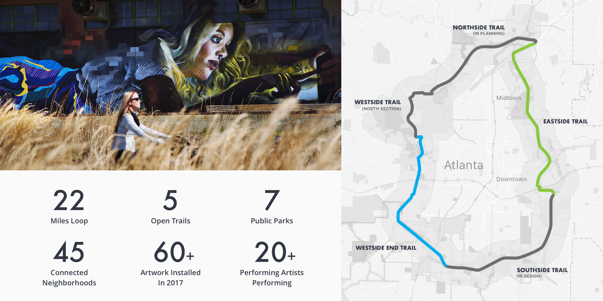
Problem Statement
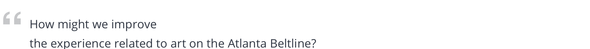
Project Information
Category
Service Design Group Project @ Georgia Tech
Duration
Sep. 2018 - Nov. 2018
Keywords
Service Design, Brand System, UCD Process
Cross-platform, Web, Mobile
Team
Michelle Ma, Scott Sun
Tools
Paper and pen, Sketch, InVision, Framer X Adobe After Effects, Adobe Premiere Pro
My Role
Scott and I worked together in most part of this project. We splited the visual design evenly, and helped review each other's work frequently.
1. Conducted initial research including field observation, online research, eleven semi-structured interviews, creating stakeholder relationship map, competitive analysis.
2. Synthesized research insights and created personas, empathy maps and current user journey maps.
3. Analyzed Atlanta Beltline Inc and Art on the Atlanta Beltline's brand system, and designed a new sub-brand system for this project.
4. Designed and prototyped half of this project's visual assets.
5. Ran design feedback sessions and user testing with all types of stakeholders, and iterated on the design.
Process
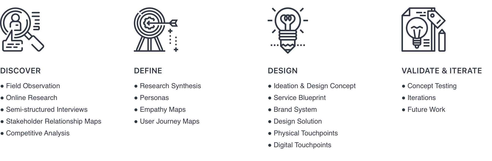
02.DISCOVER
Research Overview
To better delineate our problem space, uncover user needs and discover current pain points, we carried out a series of research.
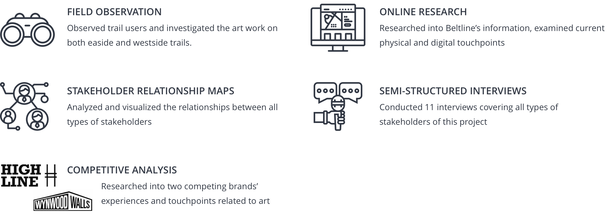
Field Observation
Through the field observationg of two main trails of Atlanta Beltline, we found following issues:
It is hard to aquire art information on the trail. Signage is either missing or in a bad maintenance condition.
Printed materials including maps, flyers, brochures are only provided at a few locations on the trails.
Visitors cannot obtain art information based on the location, preference and need.
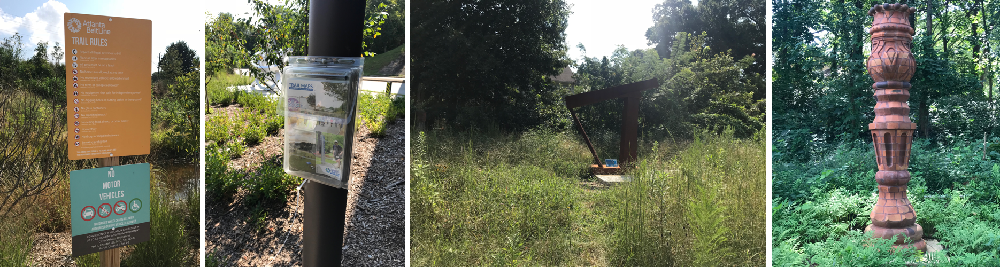
Online Research
2017 Exhibition Key Facts
There were 11 murals, 55 sculptures/installations/pavilions installed on the Beltline. And there were 26 performances actively being performed. However, there are only 2 administrators who currently manage the program, communicate with the artists, operate and maintain the channels that touch the visitors and general public.
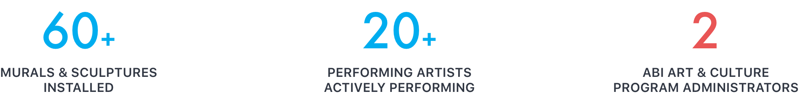
Current Websites
Existing Trail Map
Semi-structured Interviews
We firstly arranged an interview Chris Langley, the Art and Culture Program coordinator of Atlanta Beltline Inc. We hoped to learn current process and procedures getting an artwork installed on the trail and asked for challenges he encountered while managing this process. And then we went out to the eastside trail and interviewed 10 participants who were considered as other types of stakeholders in our project.
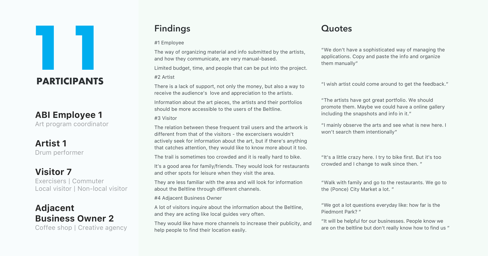
Stakeholder Relationship Map
In order to better delineate the problem space we should explore and narrow down the scope of this project, we first needed to understand the key stakeholders involved and how they relate to each other.
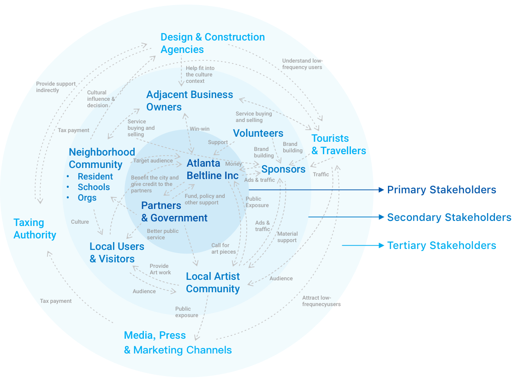
Competitive Analysis
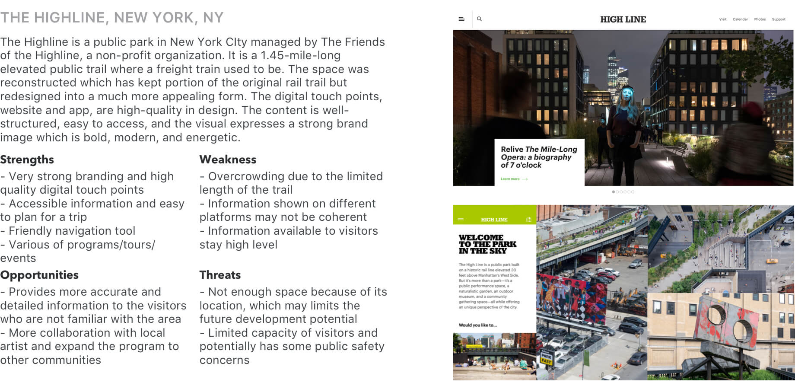
03.DEFINE
Synthesized Insights
Based on the research findings, we synthesized pain and gain points of 4 main target user groups and further defined the problems we would like to address through our design.
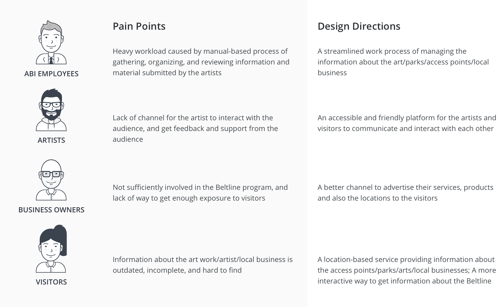
Problem Statement
How might we improve the efficiency and reduce the manual labor required for collecting and managing art information?
How might we improve the accuracy and timeliness of information about Atlanta Beltline that is presented to the visitor?
How might we make the art work's information and other useful information more accessible to visitor?
Personas & Empathy Maps
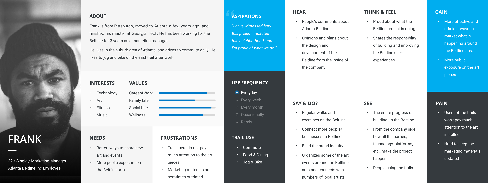
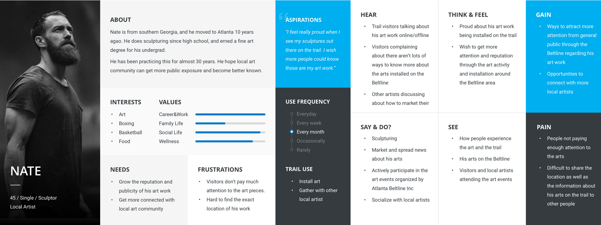
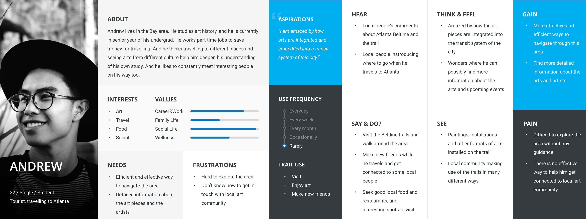
Current User Journey Maps
ABI Employee
Artist
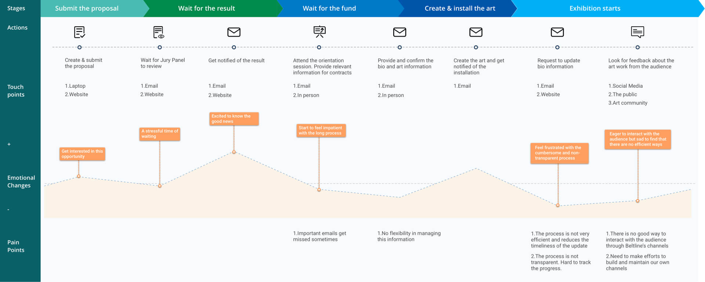
Visitor
04.DESIGN
Ideation
Based on the research findings, we synthesized pain points and corresponding design directions for 4 main target user groups and further defined the problems we would like to address through our design.
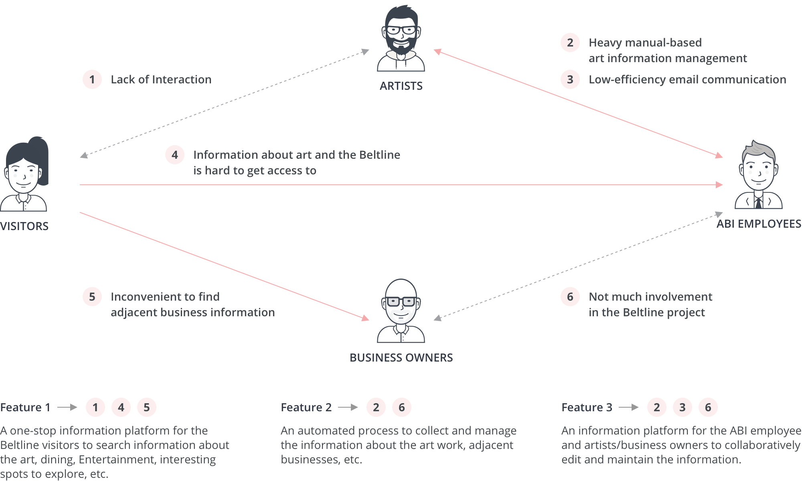
Design Concept
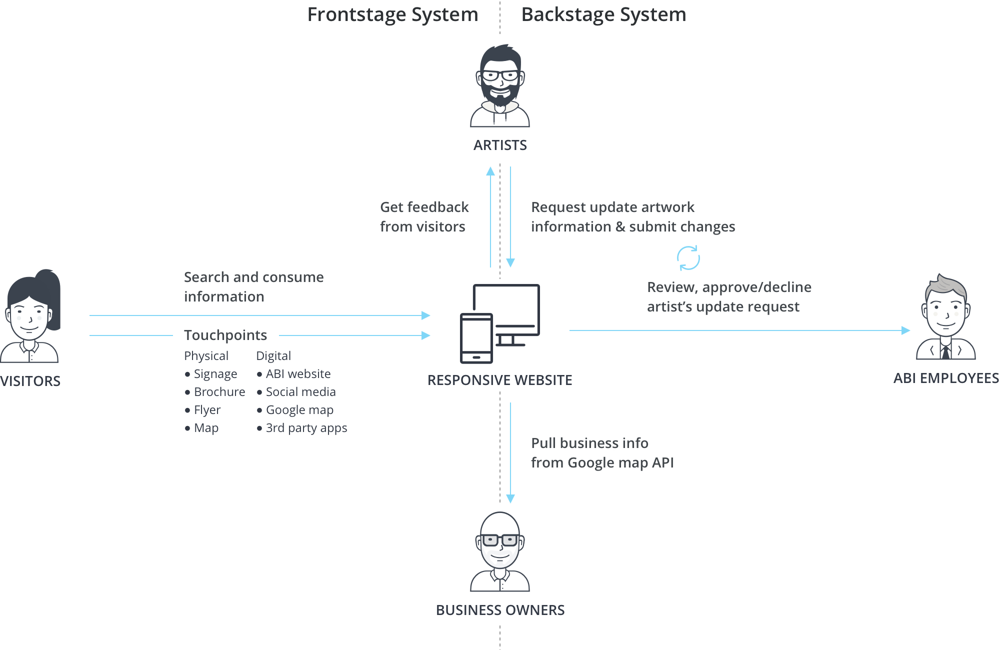
Service Blueprint
Based on the information architecture and the key user flows, we created the service blueprint which delineate how all types of stakeholders make use of and interact with the system.